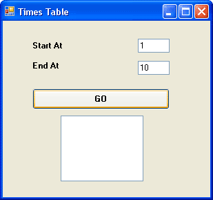

A Times Table Programme
Start a new project for this. Onto your new Form, place two textboxes and a Button. Set the Text property of Textbox1 to 1, and the Text property of Textbox2 to 10. Set the Text property of the Button to "Go".
When the Go button is clicked, the programme will put the numbers from the Textbox into two variables. We'll then put a value into a variable called multiplier. If you're doing the times tables, the format is
X multiplied by Y = Z
(2 multiplied by 3 = 6)
We'll use a For Loop to work out the X part; we'll get the Y part from a multiplier variable. We'll then display the results in something called a Listbox.
So add a List Box to your form. It looks like this in the toolbox:
The form you design should look something like this one:

A List box is similar to a Combo Box, in that you have a list of items that the user can select. Here, we're just using it display the results of our programme. We'll add items to the List box with our code, rather than in design time like we did for the Combo box.
So, here's the code for the entire programme. Double click your Go button, and add the following:
Dim number1 As Integer
Dim number2 As Integer
Dim multiplier As Integer
Dim answer As Integer
Dim i As Integer
number1 = Val(TextBox1.Text)
number2 = Val(TextBox2.Text)
multiplier = 2
For i = number1 To number2
answer = i * multiplier
ListBox1.Items.Add(i & " Times " & multiplier & " = " & answer)
Next i
When you've finished, run the programme and see how it works. You should see this appear in your List box:
Let's run through the code to see how it works.We'll do that on the next page. Click the link below to move on.